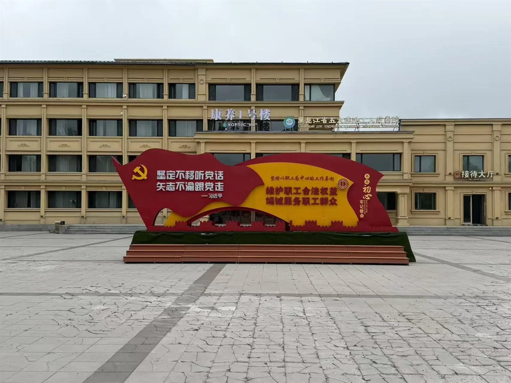
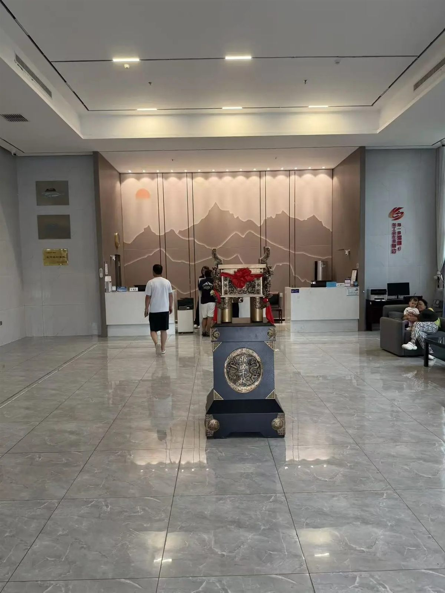
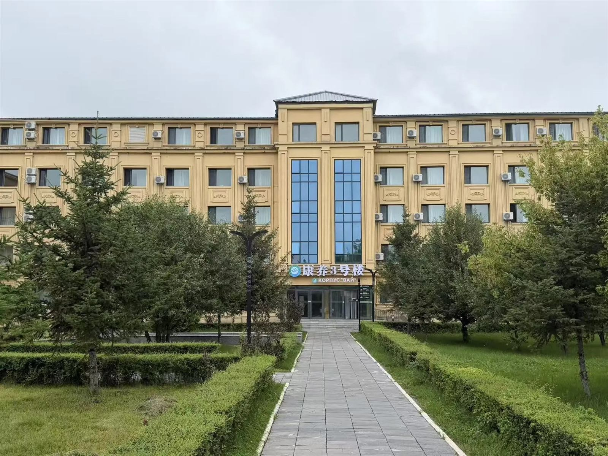
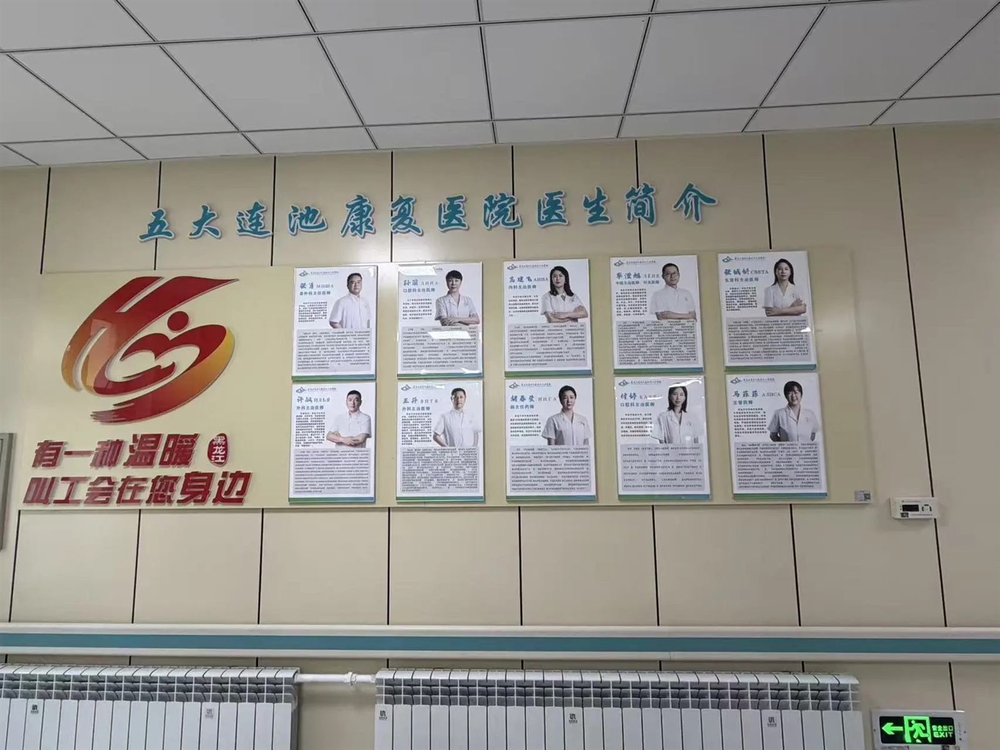
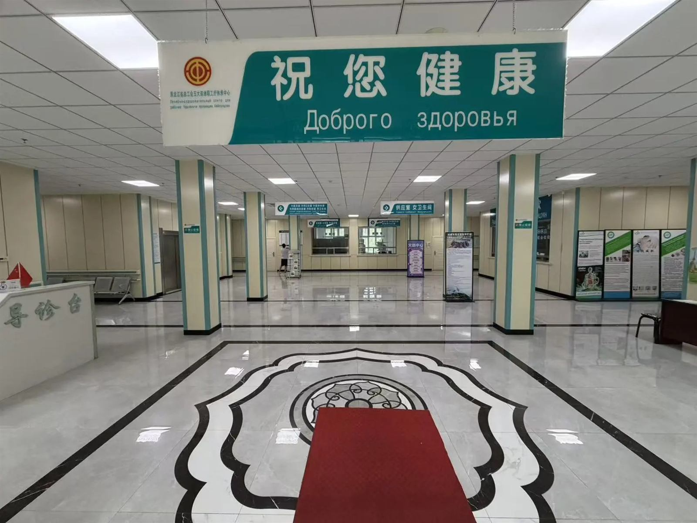
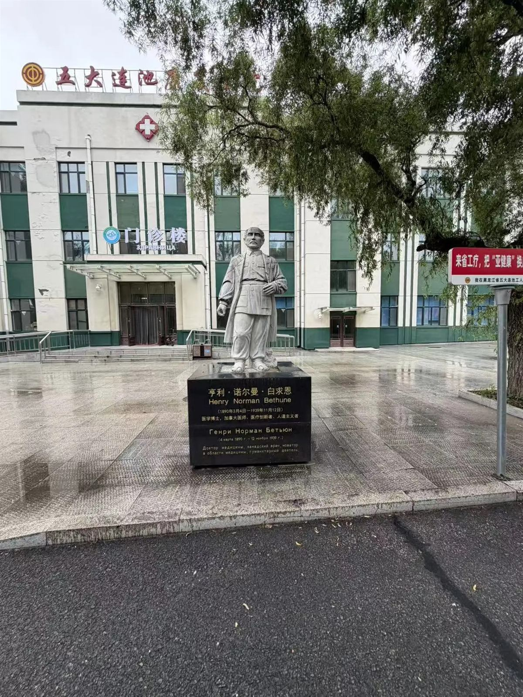
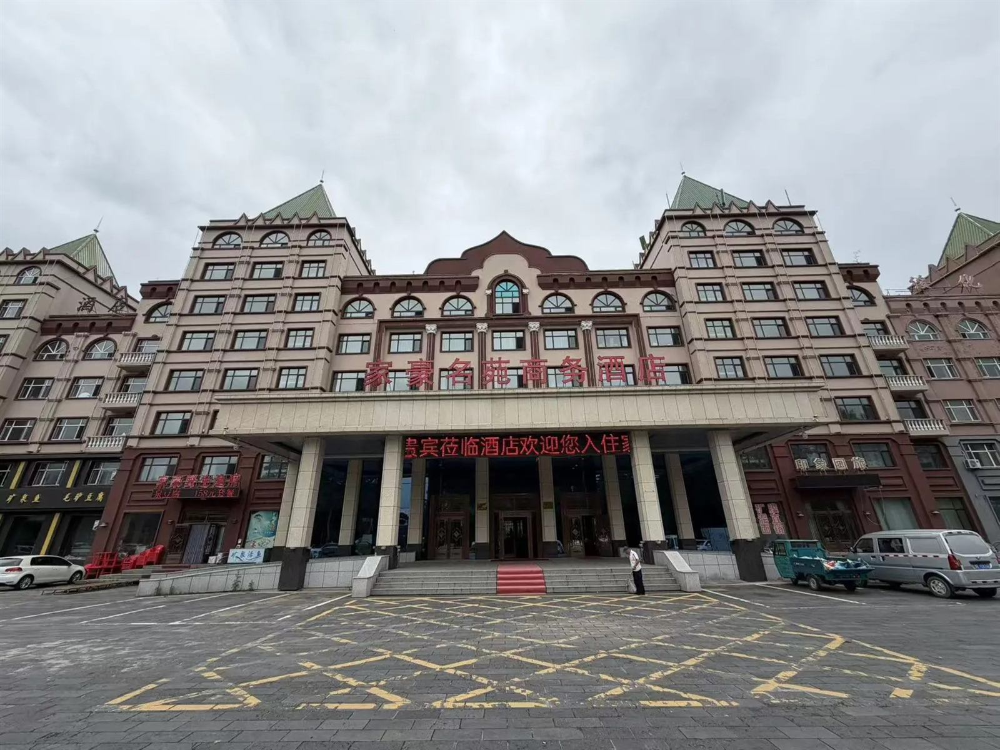
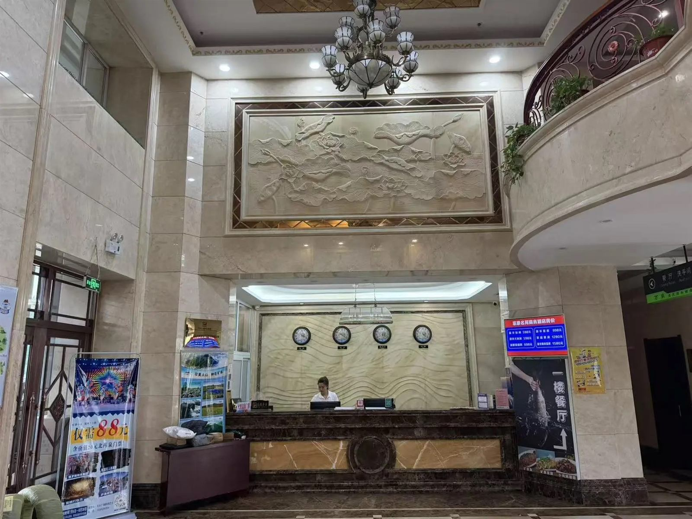
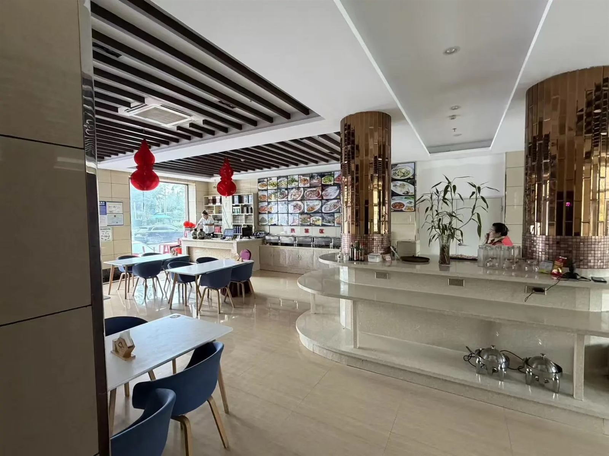
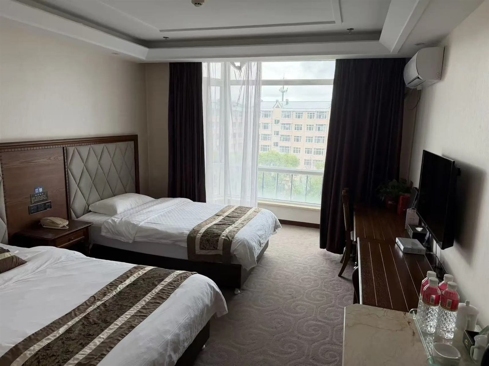

Санаторий
Санаторий Удаляньчи
Многофункциональная здравница провинции Хэйлунцзян с передовым оборудованием: лечение, оздоровление, реабилитация и профилактика хронических заболеваний.

О санатории
Здравница с развитыми техническими возможностями и вниманием к каждому пациенту.
Санаторий г. Удаляньчи провинции Хэйлунцзян — многофункциональная здравница с передовым оборудованием, позволяющим производить лечение, оздоровление, реабилитацию и профилактические процедуры. В санатории работают терапевтическое отделение, хирургия, детское отделение, гинекология, отделение китайской медицины, отоларингология, стоматология, отделения массажа, иглоукалывания, физиотерапии и лечения иглоножом.
Сейчас 72 медицинских работника средней и высшей категории ежедневно обслуживают как жителей Китая, так и большое количество российских туристов.
- Лечение различных хронических заболеваний, болезней шейного и поясничного отделов
- Гинекологические заболевания и консультации врача традиционной китайской медицины
- Стоматологические процедуры
Оснащение
Здравница полностью укомплектована необходимым оборудованием для обследования и лечения.
Здесь можно сдать лабораторные анализы, сделать рентген, компьютерную томографию, кардиограмму, УЗИ, компьютерную трёхмерную вытяжку, пройти лечение остеопороза на аппарате и лечение в барокамере. В санатории есть современные операционные палаты, проводится санитарный контроль, а также налажено сотрудничество с различными больницами провинции Хэйлунцзян и за её пределами, что позволяет получать экспертную помощь круглый год.
Методы лечения
Новые уникальные методы лечения, применяемые в санатории.
2. Парафинотерапия с травами и лечение серебряной иглой
3. Безоперационная система декомпрессии позвоночника DS
4. Активная кислородная пузырьковая спа-система
5. Терапия паром с лекарственными травами
6. Аппаратная диагностика по традиционной китайской медицине
7. Интервенционная хирургия
8. Лечение плавающими иглами
9. Гидроколонотерапия
10. Гинекологическая гистероскопия
11. Лечение гинекологическим ножом Leep
12. Бесконтактное измерение внутриглазного давления
13. Терапевтический прибор для лечения ринита
14. Интеллектуальная термосистема трёхмерного вытяжения позвоночника
В здравнице придерживаются главного принципа: обслуживание пациентов — на первом месте. Поддерживается высокая профессиональная этика, гарантируется качество обслуживания, используются высококлассные технологии для лечения болезней и оздоровления. Лечебные отделения работают в течение всего дня.
Фотографии санатория
Территория, номера и лечебные корпуса.









План пребывания
Расчёт на 10 дней — срок можно изменить от 7 до 14 дней в зависимости от плана лечения и ваших пожеланий.
1 деньТрансфер: автовокзал Хэйхэ — Удаляньчи, в пути 3,5–4 часа. Приезд в санаторий, обед/ужин, размещение в номера. Посещение терапевта и назначение процедур (в день приезда или на следующий день).
2–9 деньЗавтрак в 7:30, обед в 11:30, ужин в 17:30. Оздоровительные процедуры по назначению врача. Экскурсионные программы: парк Удаляньчи, водный комплекс (летом).
10 деньДень отъезда: завтрак в 7:30, выезд из номера, трансфер Удаляньчи — Хэйхэ, автовокзал.
Прайс и подробную программу лечения уточняем — свяжитесь с нами, и мы подберём вариант под ваши задачи.
Санаторий Удаляньчи — ваш выбор здоровья